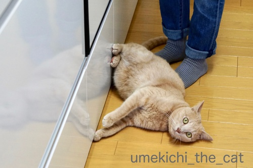
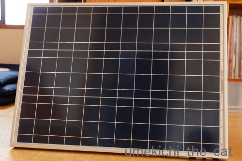
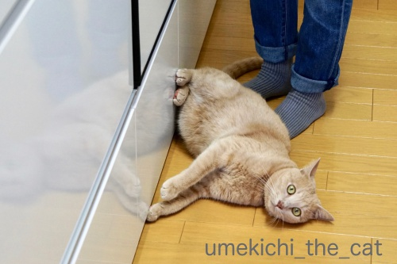
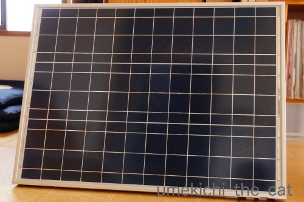

追い詰められてぐねんぐねんと謎の呼びかけ [梅吉]
イニャバウワーの後おやつを待ちきれなくてぐねんぐねんと床でのたうつ梅吉さん。

モタモタしているとがぶがぶしてくるので要注意です。
ストッキング履いているともっと大変。
![[猫]](https://blog.ss-blog.jp/_images_e/101.gif) この うすいかわは なんやー
この うすいかわは なんやー
とストッキングを引っ張ろうとします(⌒_⌒;

こちらは遊んで欲しくて一人で盛り上がっているところ。
ソファの上を寝ながらぐねんぐねんと移動して側にいる下僕に飛びついてきます。
でもいちばんぐねんぐねんするのは・・・・・
（14秒です。おっとの声付きw）
大好きな場所で「⌘◆◯※ぃぃぃ〜！！」と呼びかけられ
喜びをどう表現してよいのかわかわらなくてぐねんぐねんしてますwww
興奮すると高いところに登りたくなる梅吉さん。
網戸の窓枠、リビングのドアに垂直に駆け上がろうとします。
一番好んで上がるのは洗面ドレッサーの上。頂点平らだし。
動画は追い詰められているわけではありませんよ＾＾
ここへは垂直ではありませんがすごい跳躍で上がります。
で、涼しくなってから夜の追いかけっこが日課のおっとと梅吉。
（階下の方への配慮はちゃんとしております）
おっとが二度ほど言っている謎のよびかけ「⌘◆◯※ぃぃぃ〜」( ´艸｀)
「梅吉」が変化しまくってこうなりました。
聞き取れないでしょ？なんて言っているのかはナイショでーすw
ちなみに「ぃぃぃ〜」が付くバージョンは遊びの時だけです。
我が家では「梅吉」と呼んだことはほぼないです。
呼ぶ時は「うめ」「おにいちゃん」か、この謎の「⌘◆◯※」（爆）
本ニャンはどれで呼んでもちゃんと自分のことだと理解していますよ＾＾
みなさんは名付けた正しい名前で呼んでいますか？
 ↑ガブッと一押し↑
↑ガブッと一押し↑
9月の関西での台風被害、北海道での地震被害で我が家の備えを見直しました。
新たに何点か購入したのですがその一つ。
電源がないのが一番辛いだろうということで大容量のポータブル電源。
発電機も考えたのですが置き場所、メンテ、騒音を考えてこちらにしました。

ACアダプターで蓄電できますがソーラーパネルでの蓄電もできます。
まだあまり実験していないのですがノートパソコン１台なら連続して20時間くらい（？）使えました。
電子レンジ500wはダメでしたが200wはOK。
掃除機には使えませんでした。
テレビは繋いでませんがPCが使えるならテレビは見られなくてもよいかな。
（電子レンジ500wがダメならテレビもダメですよね、きっと）
災害時に活躍することのないように願ってますが
節電のためにソーラーパネルで蓄電した電気を扇風機やPCで使うのはありかな、と思ってます。
今週末はいろいろあってレスポンス＆みなさまへのご訪問が遅れそうです。
落ち着いたら伺いますのでよろしくお願い致します(^_－)☆

モタモタしているとがぶがぶしてくるので要注意です。
ストッキング履いているともっと大変。
とストッキングを引っ張ろうとします(⌒_⌒;
こちらは遊んで欲しくて一人で盛り上がっているところ。
ソファの上を寝ながらぐねんぐねんと移動して側にいる下僕に飛びついてきます。
でもいちばんぐねんぐねんするのは・・・・・
（14秒です。おっとの声付きw）
大好きな場所で「⌘◆◯※ぃぃぃ〜！！」と呼びかけられ
喜びをどう表現してよいのかわかわらなくてぐねんぐねんしてますwww
興奮すると高いところに登りたくなる梅吉さん。
網戸の窓枠、リビングのドアに垂直に駆け上がろうとします。
一番好んで上がるのは洗面ドレッサーの上。頂点平らだし。
動画は追い詰められているわけではありませんよ＾＾
ここへは垂直ではありませんがすごい跳躍で上がります。
で、涼しくなってから夜の追いかけっこが日課のおっとと梅吉。
（階下の方への配慮はちゃんとしております）
おっとが二度ほど言っている謎のよびかけ「⌘◆◯※ぃぃぃ〜」( ´艸｀)
「梅吉」が変化しまくってこうなりました。
聞き取れないでしょ？なんて言っているのかはナイショでーすw
ちなみに「ぃぃぃ〜」が付くバージョンは遊びの時だけです。
我が家では「梅吉」と呼んだことはほぼないです。
呼ぶ時は「うめ」「おにいちゃん」か、この謎の「⌘◆◯※」（爆）
本ニャンはどれで呼んでもちゃんと自分のことだと理解していますよ＾＾
みなさんは名付けた正しい名前で呼んでいますか？
9月の関西での台風被害、北海道での地震被害で我が家の備えを見直しました。
新たに何点か購入したのですがその一つ。
電源がないのが一番辛いだろうということで大容量のポータブル電源。
発電機も考えたのですが置き場所、メンテ、騒音を考えてこちらにしました。

ACアダプターで蓄電できますがソーラーパネルでの蓄電もできます。
まだあまり実験していないのですがノートパソコン１台なら連続して20時間くらい（？）使えました。
電子レンジ500wはダメでしたが200wはOK。
掃除機には使えませんでした。
テレビは繋いでませんがPCが使えるならテレビは見られなくてもよいかな。
（電子レンジ500wがダメならテレビもダメですよね、きっと）
災害時に活躍することのないように願ってますが
節電のためにソーラーパネルで蓄電した電気を扇風機やPCで使うのはありかな、と思ってます。
今週末はいろいろあってレスポンス＆みなさまへのご訪問が遅れそうです。
落ち着いたら伺いますのでよろしくお願い致します(^_－)☆

カフェオレ色の梅吉

梅吉 2023年8月10日 永眠


梅吉と出会った譲渡会

犬猫の理由なき殺処分ゼロ
妄想広告
UMEKICHI 光

爆発的に早い！
時々攻撃的！
Thanks to Mr.Boss365
爆発的に早い！
時々攻撃的！
Thanks to Mr.Boss365

おっと様「キチーー」なのかな私には「ちしーー」に聞こえます。
梅吉さんソファーで舌ぺろりんと出してるお顔が可愛いし、下半身のひねりが美しいです。
ソーラー蓄電器があればPCで情報集めやメールはできますものね。安心ですよね。
by zombiekong (2018-10-05 02:01)
やばいｗぐねんぐねんが(〃ω〃)ﾓｪ!!過ぎるｗ
呼び方は…それぞれですよねーｗ
猫毬はくれはのことを、、
「く～～～れは♪☆」←小栗旬風（花よりだんご）ﾖﾘ。
と呼ぶと、大抵鼻で笑われていました…(ノω=`)
ソーラーバッテリーいいですねぇ♪
こんなサイズもあるんだぁ。
便利な世の中になったﾅｧ＾＾。
こうやって、防災グッズ集めも、楽しんでできれば、
防災も生活にとりいれられるかもですよね＾＾。niceです♪
by 猫毬 (2018-10-05 03:02)
ブラウン管のTVは消費電力が大きかったですけど
液晶になってかなり少なくなってると思いますよ。
最近のはノートPCと大差ないかも？
名前は3文字ぐらいが良いですね。
ソックス君は最近「クス男」になってます＾＾；
by ぽちの輔 (2018-10-05 06:16)
ほほう。この蓄電器は良いかも！
PCやスマホが使えたら、かなりの情報取れますよね！
いつ台風が来ても安心！って、来て欲しくないけどー(^_^;)
by よーちゃん (2018-10-05 08:24)
梅吉さんの『ぐねんぐねん』カメラ目線でされたら、
口元が緩んでしまいますね。
梅吉さんもがぶがぶするとは。
ストッキング、ちゃんと見えてるのですね。
電源のことなど考えていませんでした。
ソーラーパネルで蓄電とは凄いですね。
by kiki (2018-10-05 08:44)
グネングネン可愛いですぅ~(#^.^#)
でも油断していると飛び掛かって来る？？（笑
お名前！！確かにちゃんと読んでません(;^_^A
Ｌｅａは『レレ』や、ダメなことをやろうとするときは
『レッ』と言っております！
ちなみに先代ｓａｒａは
サラ→シャラ→シャー→シャーコ→チャーコと
呼び名がどんどん変わって行きました！
って原形がないですよね(*´ω｀*)
by きぃ (2018-10-05 10:35)
おはようございます。
梅吉君！！クネクネ！！可愛いですね！！やり甲斐があります。
謎の呼びかけ？「ちっちっー」と聞こえましたが・・・
何か見えない？「持ってるおっとさんのエナジー」に反応してますね？
小生猫にしましたが・・・反応なし。
流石、万全の備えです！！
発電機より大容量のポータブル電源の方が、日常的に使えて良いですね。
ちぃさん！！お忙しく大変と思いますが・・・
梅吉君のように、のんびり？楽しく過ごして下さい。
人間も充電が必要です！？(=^･ｪ･^=)
by Boss365 (2018-10-05 11:02)
あ〜ソーラー発電かぁ…。
先日、車のバッテリー上がりでJAFを2時間近く待った、という話を美容師さんにしたら、バッテリーチャージャーを勧められたんです。
でもこういう手もあるかぁ。考えます！
ここ千葉は南海トラフ地震が怖いです(TT)
by も〜 (2018-10-05 11:26)
梅吉さんのぐねんぐねん可愛いですねぇ(^O^)
うちのにゃんずはかみさんに呼ばれて腰ポンポンや
なでなでされるとぐねんぐねんします＾＾
なので抱っこしてると落ちそうになります^^;
私が抱っこしてるときのぐねんぐねんは逃げようとしてる時ですが(*_*)
呼びかけは大御所以外はアルテミスが長いのでアルくらいかなぁ^^;
大御所は本名は圭太だけど、圭太と呼ばれるのは怒られる時くらいで
普段は大御所や茶色と呼ばれてますｗ
by ニッキー (2018-10-05 12:24)
ちち～っ！ぷしゅぃ～っ！と聞こえます(≧▽≦)
梅吉さんもおっとさんも楽しそう♪
高いところでぐねんぐねんすると落ちそうでハラハラ。
ウチのは実際落ちます^^;
呼び名は山ほど。
最近はこっちゃん、こってんてん、ぷんきち（ぷんすか怒るから）、こぶちゃん（子豚のように鼻を鳴らすから）、つれしょん太郎（下僕がトイレに入るとこてつも自分のトイレに入るから）などなど。
お～これが噂のポータブル電源！
手回し発電のラジオライトしかなくて。
冬よりも真夏の停電が心配。せめて扇風機動かさないとこてつがヤバイかなと思ったり。ソーラーパネル付きだと心強いですねね^^
by ゆきち (2018-10-05 12:43)
可愛いな～、なんて甘えんぼさんなんでしょ。たまりませぬね！
ヽ(〃^・^〃)ﾉ ﾁｭｯ♪
うちも「お兄」は本名じゃないのですー。いっぱい呼び方があるんだけど、なぜか自分のことだとわかっているのが不思議ですね♪
by Ginger (2018-10-05 14:26)
梅吉君かわいい～ぐねんぐねん！
呼び方は色々ですね。「おい、そこの黒いの」とか(笑)
by palpal (2018-10-05 15:12)
興奮すると高いところに登りたくなるのは、猫の習性です。
でも、高い木に登って降りられなくなる猫も多いらしいよ（ﾟ□ﾟ）
by 英ちゃん (2018-10-05 17:20)
ソーラー発電機、今はどんな災害があるか分からないので、必需品となるかもしれないですね。
家の猫もフルネームで呼んだことが無かったですね。
よく頭の字を取って「ヌー」って呼んでました！
by kou (2018-10-05 18:10)
梅吉くん、待ちきれなくてぐねんぐね～ん(≧▽≦)
旦那様、なんて呼んでいるんだろう。
梅吉くんには遊びに誘う呼び方だってわかっているんだろうね。
家はタラがぐねんぐねんになりがちで。どこでもぐねんぐねんです。
くるみは、嬉しくなりすぎると甘噛みしてくることが多いかな。
しかも腕とか肘の皮とかものすご～くちっちゃく噛むの。
呼び方も色々だよね。可愛すぎて色々呼んじゃう。
私の場合・・・間違えることも多々あります(^-^;
by emi (2018-10-05 18:57)
電子レンジ使える為には結構容量の大きなバッテリーでもすぐに無くなっちゃいますね！
温め用はキャンプのボンベ缶でボンベが30本くらいあります(^^)
by ma2ma2 (2018-10-05 18:58)
ぐねんぐねんする梅吉さん、可愛い～！
ご機嫌ですね～ここへひとっ飛び？ 運動能力高いですね。
ちし～っっていうような声、猫のシャーに似ていて、いきなりだったら嫌がられそう。
だんだん変化したから、遊ぶ時の声、ってことですごく嬉しいのかにゃ＾＾
うちのもいろんな名前で呼んでましたね。みゅんというのをうちの親が発声できなくて前の猫の名前で呼ぶのに知らん顔しているので私もそう呼ぶことにして、遠くにいるときに呼ぶのはそちら。ほかに「みゅんぴー」とか「くっくー」とか色々＾＾
大容量のポータブル電源、すごい！
たしかに役立ちそう‥‥＾＾
by sana (2018-10-05 19:00)
ぐねんぐねんの姿が、なんか楽しそう＆可愛いですね！^^)
ウチではそのまま呼ぶか、舌で「チッチッチッ」と呼ぶか
あるいは、呼ばずとも近づいてくるかのどれかです。^^;
ポータブル電源、いいですね。
ジャンプスターターは前から欲しいなと思ってました。
by yes_hama (2018-10-05 22:04)
ユキ。ユキちゃん。ユキッチ。ペロちゃん。
モモ。モモちゃん。モモッチ。ポンちゃん。
です(^^;
その時の気分で変わります(^^)
by riverwalk (2018-10-05 23:56)
梅吉さん、大興奮楽しんでいますね^^
by ニコニコファイト (2018-10-06 09:05)
喜びのぐねんぐねん♪
梅吉さん、ココロに楽しさが湧き上がってる感じですね〜(^.^)
ダンナさま･･･ ちしぃぃぃぃ〜???
ウチも、いろんな名前で呼びますが、
猫たちは、呼ばれようが呼ばれまいが、ど〜でもいい的な？(^_^;
by のらん (2018-10-06 11:22)
謎の呼び声何だろう？
梅吉さんの喜び方、かわいいですね~。
ポータブルでソーラー蓄電
PC8時間ならなかなかいいですよね~。
よい備えですね。
私も考えよう。
by ふにゃいの (2018-10-06 22:52)
我が家にも、色違いの床モップが３ひ・・・いや、３台ありますよ。
毛足の長いタイプのが一番ゴミを吸い取ります（笑）
くねくね♡ご機嫌ですな（*´∀｀*）
ポータブル電源かぁ。
いろいろ準備しないとなぁ・・・
やっぱり灯りがろうそくでは危ないですしね^^;
by Ja-Kou66 (2018-10-08 00:31)
おにいちゃんって呼び方いいなあ^^
うちは、あおは
あおのすけ、あおこちゃん、いちいちちゃん（やることがいちいち可愛いから）
うみは、ぽんぽん丸、うみこ、うみむすめｗｗ
by リュカ (2018-10-09 10:54)
zombiekongさん＞
「キチーー」も「ちしーー」も近いです！
だいたい合ってると言っても良いかもしれませんw
ぐねんぐねんしている時ってびっくりするぐらい
体をひねったり変な首の曲げ方したりしますよね( ´艸｀)
猫毬さん＞
呼び方の抑揚も色々ありますよね＾＾
きっと猫毬さんにしか出来ない呼び方
くれはちゃんは喜んでいたのかも！
防災グッズも日進月歩。
大きな震災がある度どんどん便利になっていく
側面もありますけどw
ぽちの輔さん＞
あっΣ(ﾟ◇ﾟ；)今のテレビってそんなに省エネ型なんですね！
今度繋げてみたいですが
我が家のテレビのコンセントまでたどり着くの結構大変かもwww
クス男（爆）それは思わぬ変化を遂げましたね！
よーちゃん＞
そうなんですよー、防災グッズなんて使うことがないように
願うばかりです！！
でもこれは日常使いも出来そうと思ってます＾＾
kikiさん＞
カメラ目線は可愛いアピールでもあるのでしょうか＾＾
ちゃんと下僕の心を鷲掴みにする術を心得ているようです！
ストッキングにはちゃんと興味を示します。
見慣れないものは気になってしょうがないようですよ。
我が家は電源がないと（PCが使えないと）何も出来ないので
これでちょっとは安心できそうです。
きぃさん＞
『レレ』ちゃん、ってかわいいですねー＾＾
名前の変化ってどうしてそうなった？って
なかなか説明が難しかったりしますよね！
家族内でも「どうしてこうなったんだっけ？」なんて
話をすることもありますw
チャーコは変化しすぎぃ（笑）でも原型をとどめてないのわかります！！
おっとがいっている呼び方も原形はとどめてませんwww
Boss365さん＞
おっと、この呼び方の時は手もついているのですが（爆）
そこからエナジー出ているかもしれません！
私がやっても全然反応しないのがその証拠！？
なんでだろうと思っていたのですがそれだ！
それが原因ですね(≧▽≦)
この３連休は当初の天気予報よりもずっとお天気が良くなったので
私も太陽光チャージできましたよー＾＾
も〜さん＞
関東も沿岸部は南海トラフ地震の範囲ですものね！
なんらかの備えが必要ですね。。。
我が家は車は手放したので
ジャンプスターター機能はあまり注目していなかったのですが
車を持っている方はあると安心の機能ですね。
しかも蓄電池としても使えるのでさらに便利かも！！
（メーカーの回し者ではありませんよ (⌒_⌒;）
ニッキーさん＞
あらら・・・ニッキー家ではぐねんぐねんもそのような差がw
(ゴッドマザー様の）ぐねんぐねんの時ってハイになっているので
結構周りを見ていないかも、ですね。
我が家も高いところでぐねんぐねんしている時は
下僕は笑いながらも不意の落下には備えるようにしていますよ＾＾
茶色wいいですねー0(≧▽≦)0
ゆきちさん＞
「ちち〜っつ！」かなり近いです！！
「ぷしゅぃ〜っ！」は残念w遠のきましたwww
ぐねんぐねんしている時は変なスイッチが入っているので
行動は要注意ですよね。
こてつくん呼び方は名前の変化というより
行動が呼び名になるパターンが多いですね＾＾
ぷんきち、よいですねー0(≧▽≦)0
つれしょん太郎は猫母さんのトイレに一緒に入ってくるのかと思ったら
まさかの付き合いおしっこ！！
お二人のシンクロ度がすごいですw
行動が呼び名になるパターンは我が家は「ちゃん」がつくことが多いかな。
おひざちゃん、ねむねむちゃん、白目ちゃんなどなど ( ´艸｀)
Gingerさん＞
かまってちゃんで甘えん坊さんで・・・本当にたまりませぬw
あららら・・・私今まで「お兄」が本名だと思っていました(^_^;)
本名よりも変化した呼び名の方がその子をよく表していることもあるし。
愛おしいからこそ呼び名も変化するのかもしれませんね！！
palpalさん＞
色で呼ぶお家多いかもー！
ニッキーさんちは「茶色」ですってw
うちは時々「カフェオレ色の人」（人じゃないけどw）ですよー。
きなこちゃんは「部分しましまー！」だったりするのかしら( ´艸｀)
英ちゃんさん＞
後先考えずに登ちゃいますよね、ニャンコはw
消防士が猫救出、外国ニュースではよく聞くけど
日本でもあるのかしら・・・
kouさん＞
なるべく避難しないで済むように準備を整えたいと思っています！
今の時代電気は不可欠ですもの・・・
フルネームで呼ぶことは無いですよね！
可愛いものはつい愛称で呼びたくなりますね！！
emiさん＞
ふふふ・・・おっと、なんて言っているかわからないでしょー＾＾
実はどうしてこうなったのか
おっともわたしもわかってないかもw
こういう変化って説明できないところがありますよね。
emiさんちはタラくんがぐねんぐねんなんですね！
男の子の方がそうなりやすのかな？
女の子はクールだから表現が違ってくるのかな・・・0(≧▽≦)0
甘噛みも可愛いよねー。
梅吉も小さい前歯だけでみちみち甘噛みする時があります
間違えて呼ぶ！？
子供の時母が私と兄の名前を間違えて呼んでたけどそんな感じかしらー（爆）
ma2ma2さん＞
電子レンジは使わない方向で対策をとることにしました！
やっぱり確実にガスボンベですよね＾＾
我が家はカセットコンロのガスをたくさんストックしています。
by ちぃ (2018-10-09 20:05)
sanaさん＞
ひとっ飛びも出来ますが私がドレッサーを使っていると
間違いなくロイター板使いされるのでとても危険ですw
飛び上がろうとする蹴り、容赦ないんですよwww
「ちし〜っ」って私が言ってもあんまり反応してくれません。
おっとが言うと遊びの合図だって完全に理解しているようで
大げさすぎるリアクションが返ってきます。
おっとは「下僕冥利につきる」と喜んでますよ(*>艸<)
あらら「みゅんちゃん」がまさかの「くっくー」？
思わぬ変化を遂げるところに愛情の深さを感じます＾＾
yes_hamaさん＞
本当に楽しそうにぐねんぐねんするのです＾＾
見ている方が楽しくなってくるのでおっとと梅吉がこの遊びを始めると
私は観客として楽しませてもらってます！
呼ばずとも近づいてくる、はスモチーをご所望なのでは？
我が家もごはんやおやつが欲しい自分に都合の良い時は
目があっただけで走りよってきますw
このバッテリー
車をお持ちの方はジャンプスターターとしても使えて
良いかもしれませんね！
いかがですかー？（回し者ではありませんw）
riverwalkさん＞
ペロちゃん、ポンちゃんも正しい名前の原型をとどめてませんねw
我が家もそうですがなぜかそうなっちゃうんですよね！
ニコニコファイトさん＞
梅吉はすぐ興奮して盛り上がってくれるので
遊びがいがありますよ＾＾
のらんさん＞
ちしぃぃぃぃぃ〜！だいたい合ってます。良いセンです(^_－)☆
これをおっとに言われるともう興奮が抑えきれません(*>艸<)
私だとこんなに盛り上がってくれいないのですよwなぜだww
名前じゃなくて「ごはん」って口にしたら走ってくるので
名前を呼ぶ必要のない時もあります・・・(-_-メ)
ふにゃいのさん＞
謎の呼び方、いろいろ変化してこうなっちゃいましたw
こう言ってますと明かしてもおっとの言い方では
どうしてそれがああなるの！？と感じると思いますよ(^_^;)
いつどんな災害があるかわかりませんよね！
我が家はまずは電源確保、と思いました＾＾
Ja-Kou66さん＞
３台、お掃除はモップさん達に任せて安心！？
吸い取ったゴミ以上のものも落としてくれそうですがw
ろうそくは一応ありますが怖くて使えません。
やんちゃ坊主が倒しちゃいそうだし！
灯なら3000円くらいで良いLEDライトが買えますよ。
東日本の震災の時いろいろ見た防災用品よりも
格段に進歩しててびっくりしました。
リュカさん＞
おにいちゃんってなんか大事な長男坊って感じで良いでしょ＾＾
いつも梅吉には「頼りにしてるよ」って言ってますw
いちいちちゃんが可愛いですねー。
ちゃん、つけたくなる気持ちわかります！
我が家はねむねむちゃんとかおひざちゃんとかになりますよ。
ぽんぽん丸は経緯を聞くと一記事出来そうな予感www
by ちぃ (2018-10-09 21:49)